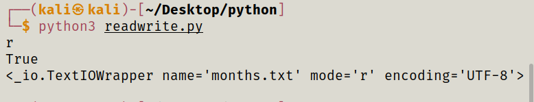
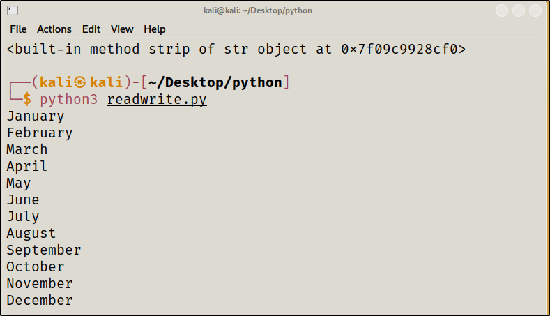
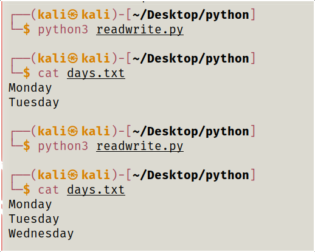

To reada file first we have created a txt with name month.
Code to read a file :
#!bin/python3
months = open('months.txt')
print(months.mode)
print(months.readable())
print(months)

#!bin/python3
months = open('months.txt')
for month in months:
print(month.strip())
#print(months.read())
#print(months.readlines())
#months.seek(0)
#print(months.readlines())
months.close()

How to Writea File :
!bin/python3
days = open('days.txt','a')
#days.write('Monday')
#days.write('\nTuesday')
days.write('\nWednesday')
days.close()
